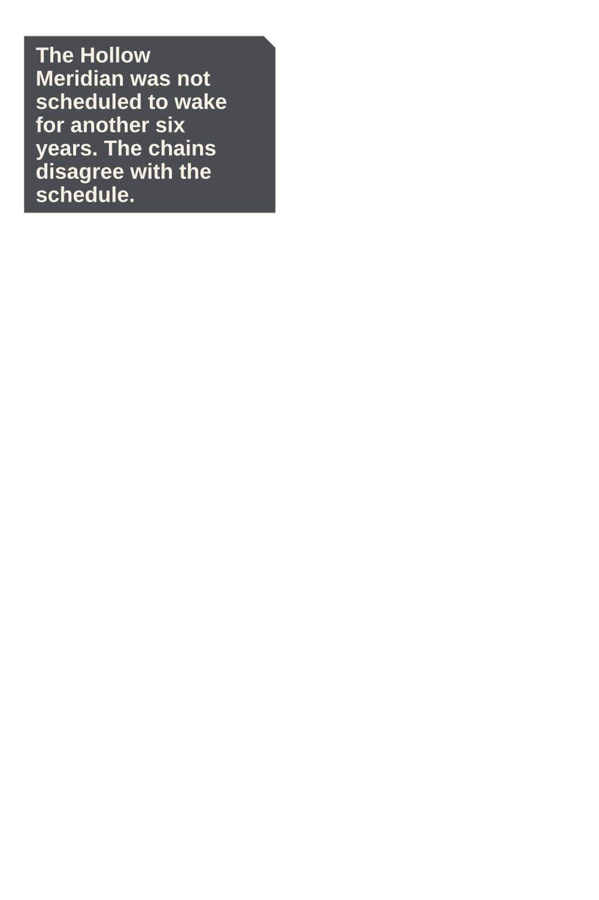
Beat and source
The Ember Vault drops beneath one chain bridge; Elian and Mira are tiny adult silhouettes crossing toward the sealed bell lift.
experiments/reimaginings/ember-lattice/pilot/source/p001.pngEMBER LATTICE · OWNER REVIEW · FULL
24 continuous panels · 9 action · 474 dialogue words · 5 system moments
Phone reader · Full-size reader · Compact review · Action strip · Diagnostics

The Ember Vault drops beneath one chain bridge; Elian and Mira are tiny adult silhouettes crossing toward the sealed bell lift.
experiments/reimaginings/ember-lattice/pilot/source/p001.png
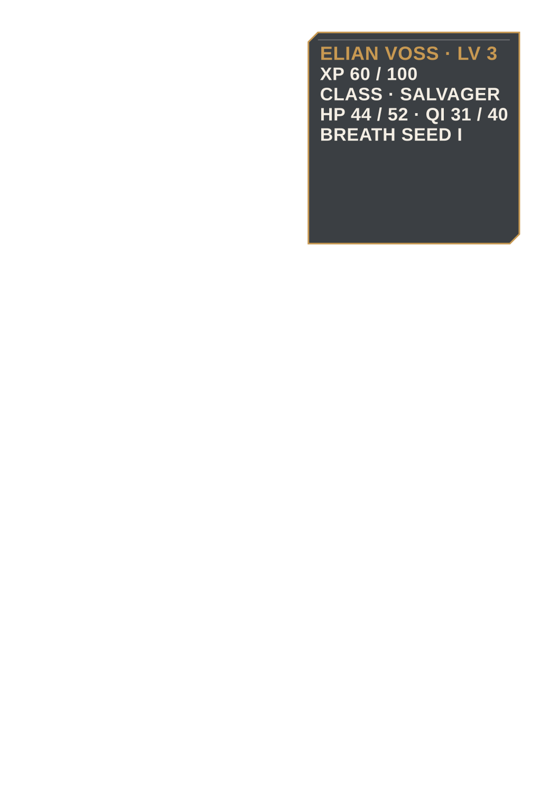
Elian pauses in mature profile with one hand on the hooked shortblade while his weak starting status hangs in reserved negative space.
experiments/reimaginings/ember-lattice/pilot/source/p002.png
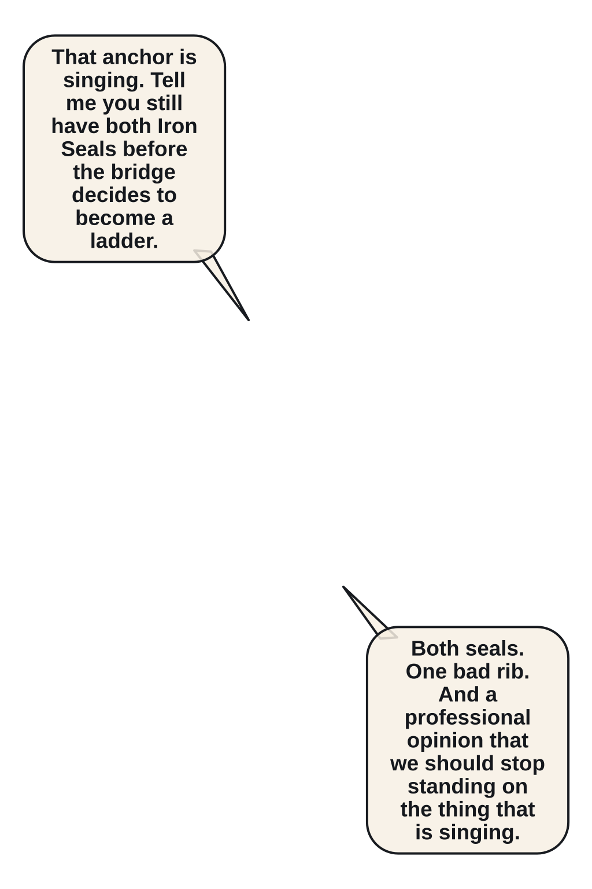
Elian and Mira trade a dry warning; the failing bridge anchor remains visible between their adult faces.
experiments/reimaginings/ember-lattice/pilot/source/p003.png
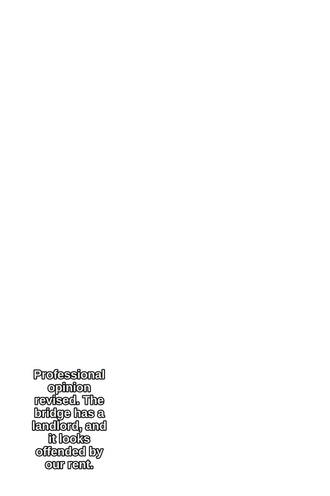
The ivory Belljaw Warden climbs onto the far platform and opens its bell-shaped jaw seam.
experiments/reimaginings/ember-lattice/pilot/source/p004.png

Side-on geography fixes Belljaw at the right bridge mouth, Mira center-left, Elian behind, and one intact anchor below.
experiments/reimaginings/ember-lattice/pilot/source/p005.png

Belljaw charges right-to-left and kicks bridge boards upward behind its foreclaws.
experiments/reimaginings/ember-lattice/pilot/source/p006.png

Mira plants the split shield and drives her spear into the charge line.
experiments/reimaginings/ember-lattice/pilot/source/p007.png

Belljaw clamps Mira's spear and wrenches it sideways while her planted boot skids.
experiments/reimaginings/ember-lattice/pilot/source/p008.png

Elian extends one hand; a single ember fault line reveals the boss's ankle seam.
experiments/reimaginings/ember-lattice/pilot/source/p009.png

Elian slides left-to-right beneath the jaw, using the chain rail as one step toward the ankle.
experiments/reimaginings/ember-lattice/pilot/source/p010.png

A ceramic forelimb backhands Elian into a hanging chain before his hookblade lands.
experiments/reimaginings/ember-lattice/pilot/source/p011.png
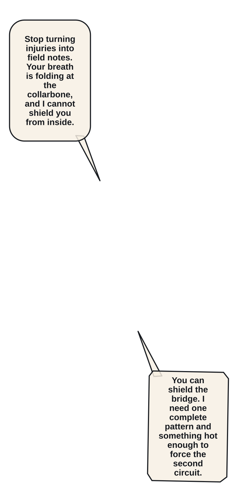
Elian hangs alone from the chain, guarding his cracked left rib as the collarbone ember fissure closes.
experiments/reimaginings/ember-lattice/pilot/source/p012.png
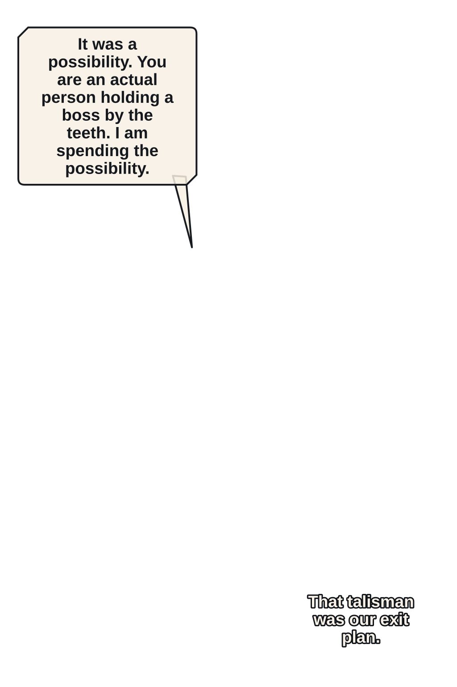
In an extreme close-up, Elian crushes his only Spark Talisman while two Iron Seals remain untouched at his belt.
experiments/reimaginings/ember-lattice/pilot/source/p013.png

Breath Seed II opens as one restrained ember ring; Elian coils against the chain with a newly stable breath.
experiments/reimaginings/ember-lattice/pilot/source/p014.png

Mira pins the bell jaw while Elian's Fault Step launches bottom-to-top through the ankle seam in one clear impact.
experiments/reimaginings/ember-lattice/pilot/source/p015.png
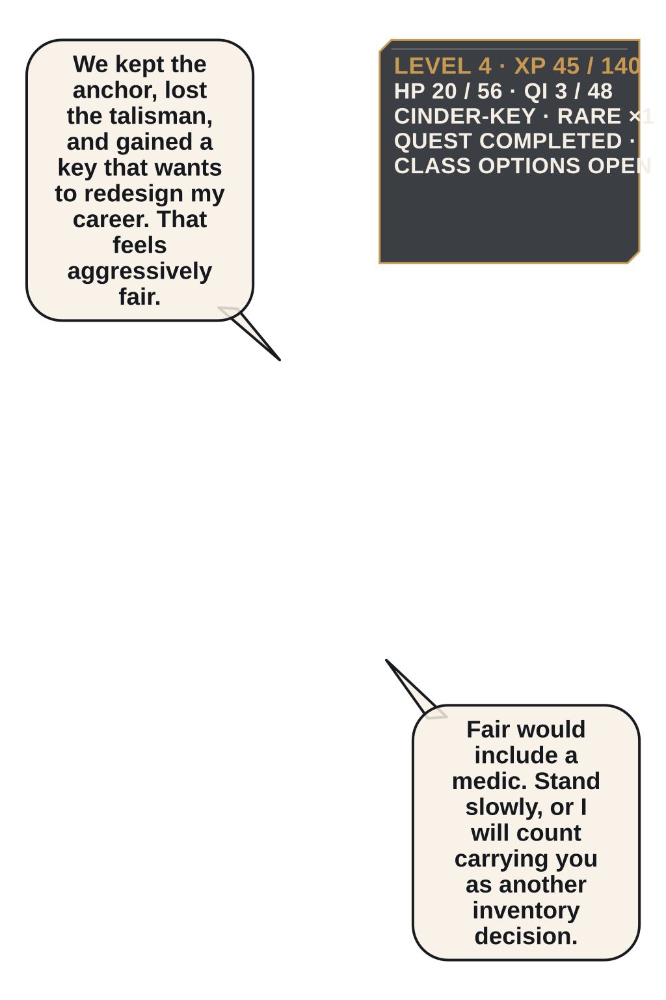
Belljaw lies collapsed inside the vault; Elian sits injured, Mira stands watch, and the Rare Cinder-Key rests in front.
experiments/reimaginings/ember-lattice/pilot/source/p016.png
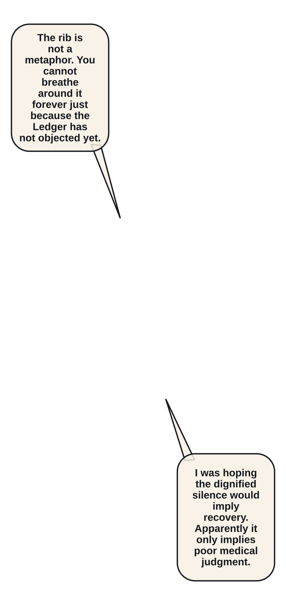
Mira kneels to bind Elian's ribs while he tries and fails to stand without her help.
experiments/reimaginings/ember-lattice/volume/ch01/source/p017.png
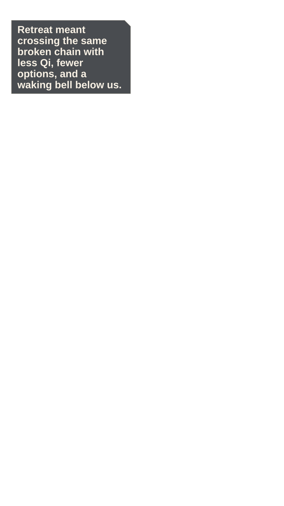
The intact anchor hums above the void as both adults assess the cost of retreating through unstable chainworks.
experiments/reimaginings/ember-lattice/volume/ch01/source/p018.png
The Cinder-Key wakes a narrow class terminal showing two paths without selecting either one.
experiments/reimaginings/ember-lattice/volume/ch01/source/p019.png
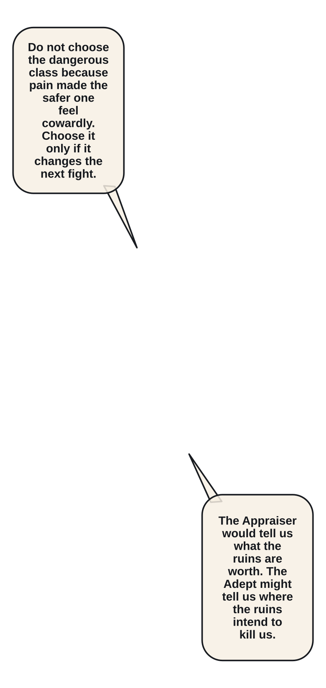
Elian studies the safer Kiln Appraiser option while Mira watches his breathing rather than the menu.
experiments/reimaginings/ember-lattice/volume/ch01/source/p020.png
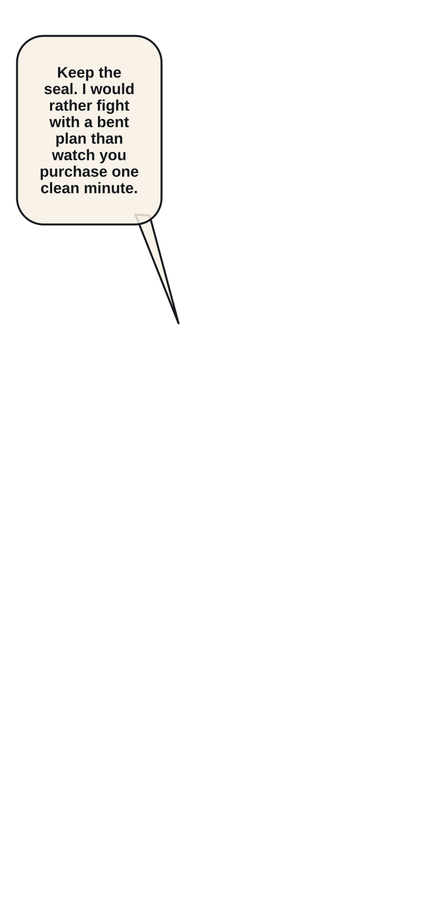
Mira presses one Iron Seal back into Elian's palm instead of letting him spend it on pain relief.
experiments/reimaginings/ember-lattice/volume/ch01/source/p021.png
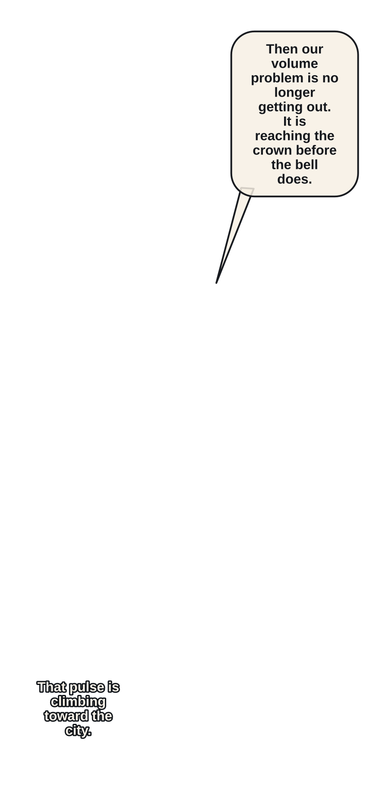
A distant bell pulse travels upward through the vault cables toward the public surface lift.
experiments/reimaginings/ember-lattice/volume/ch01/source/p022.png
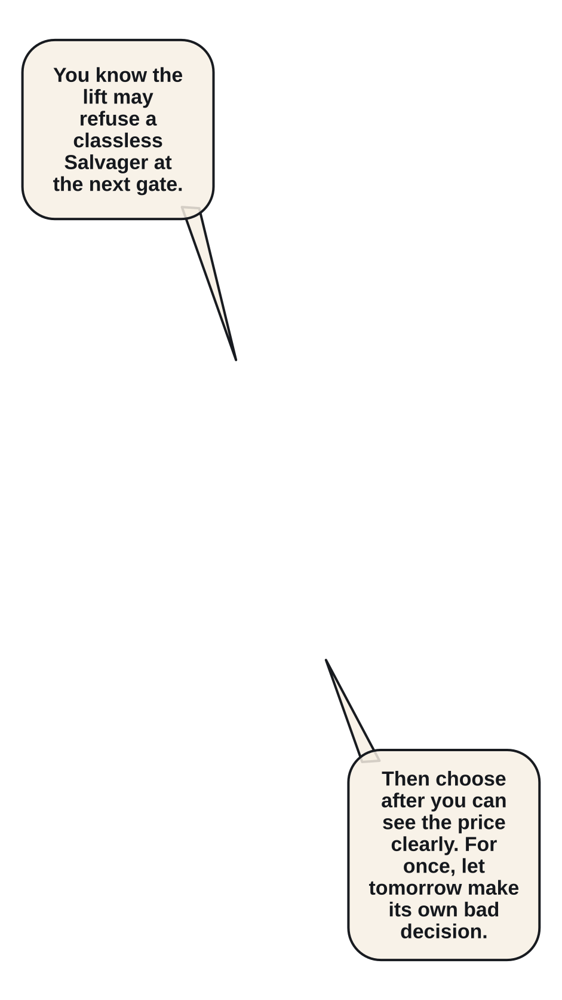
Elian and Mira step into the rising bell lift together, damaged gear and adult silhouettes clean against the pale door.
experiments/reimaginings/ember-lattice/volume/ch01/source/p023.png
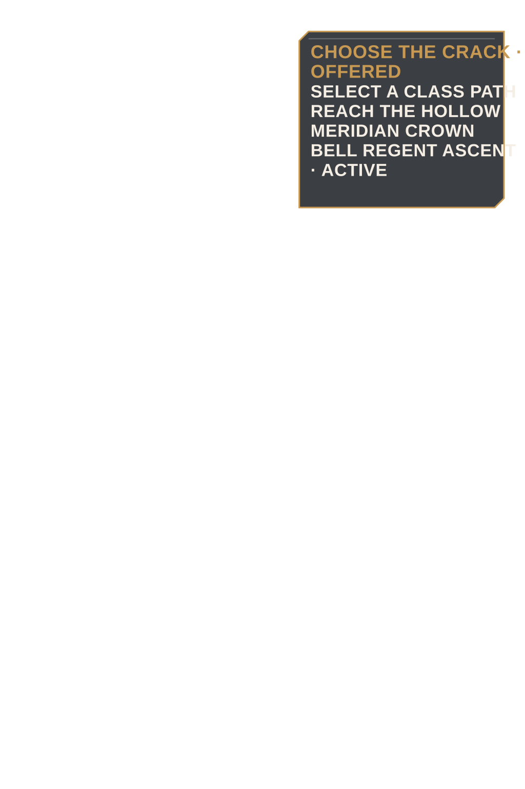
The lift closes on a new Ledger offer: choose a class and reach the Hollow Meridian crown before the Bell Regent ascends.
experiments/reimaginings/ember-lattice/volume/ch01/source/p024.png